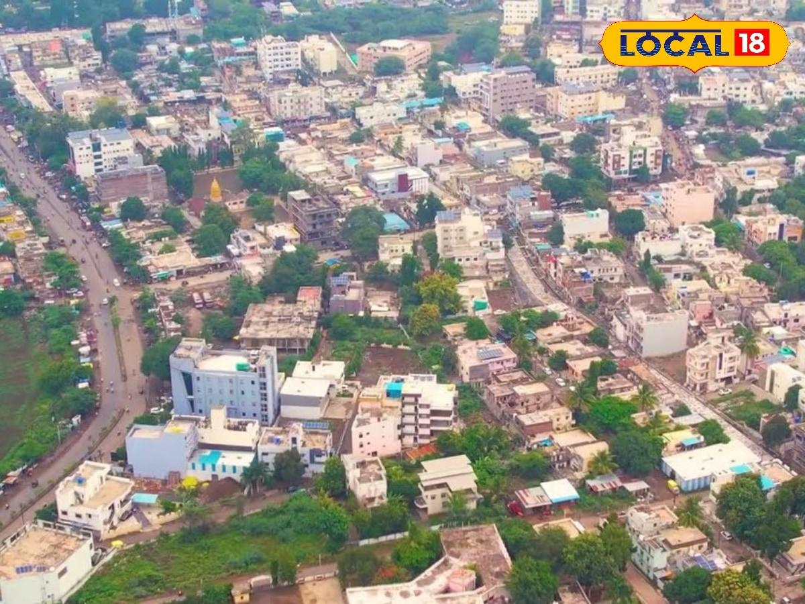
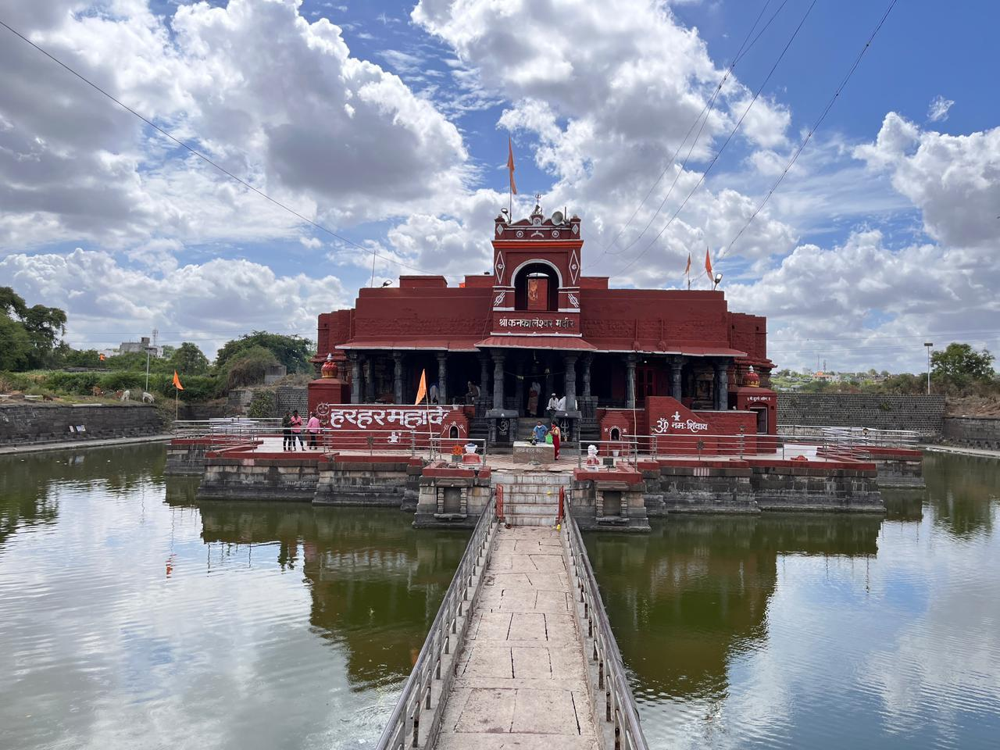
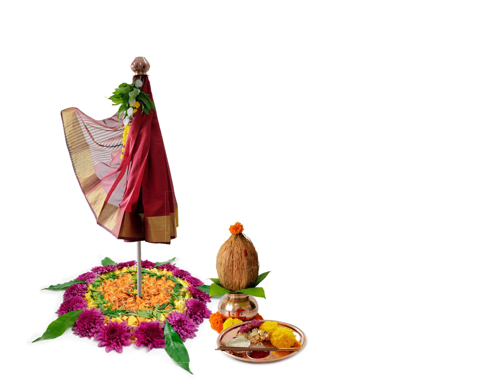
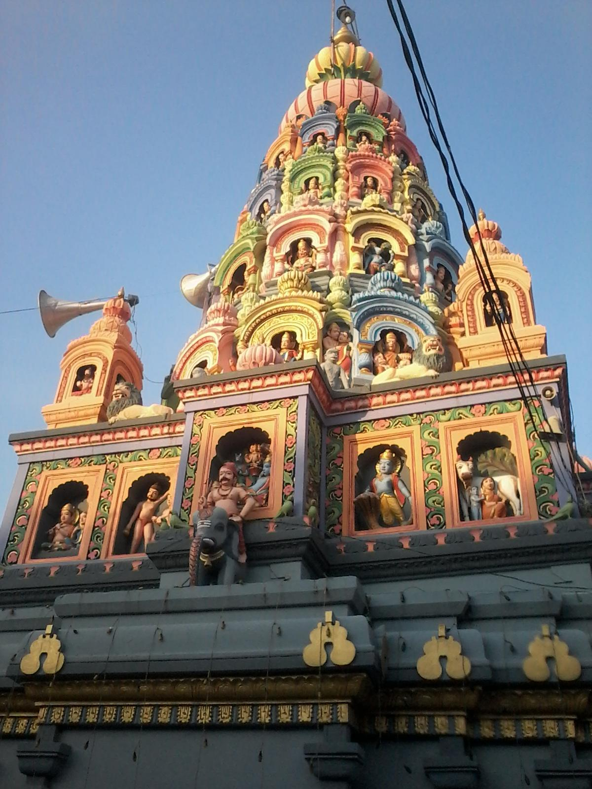
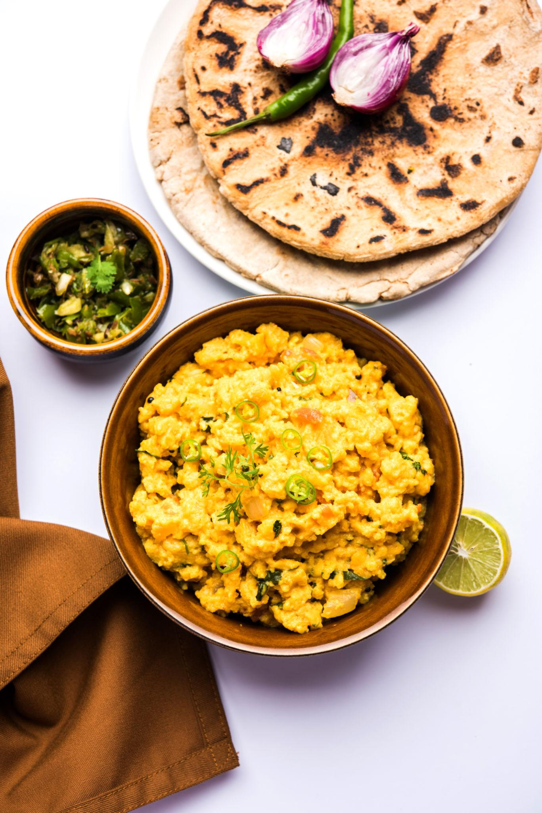
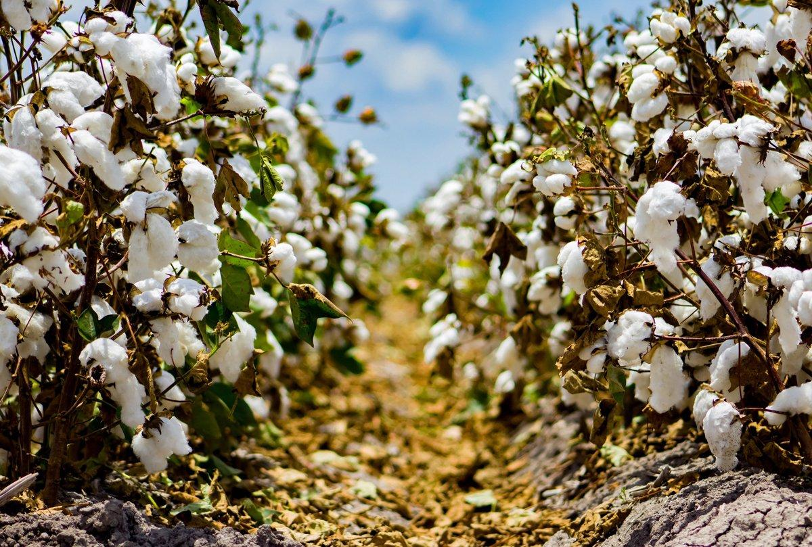
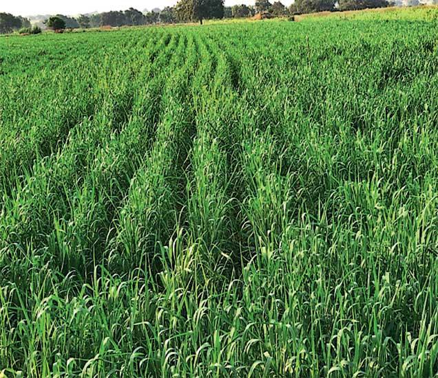
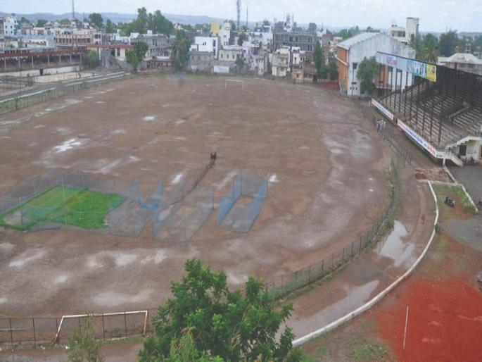

About

Beed is a beautiful, historic city in Maharashtra, India. It sits in a hilly area along the banks of the Bindusara River. The city has a rich past and a lively community. Today, it is famous for its farming, old temples, and delicious local food.
- Location: It sits in central Maharashtra, India, right along the banks of the Bindusara River.
- Famous as: It is known for the ancient, water-surrounded Kankaleshwar Temple and its extra sweet custard apples.
History

Ancient stories say Beed has roots in the era of the Ramayana epic. Legend says the mythical bird Jatayu fell to the ground here after fighting Ravana. Over the years, many powerful rulers controlled this land. It was ruled by the Yadava kings, the Delhi Sultanate, and the Mughals. Later, it became part of the Nizam's Hyderabad State before joining independent India. You can still see old walls and gates around the city from these eras.
- Beed has a deep history that stretches back to ancient times. Local legends connect the city to the Hindu epic Ramayana, saying the mythical bird Jatayu fell to the earth here. Over the centuries, the land was ruled by powerful empires, including the Yadava kings, the Delhi Sultanate, and the Mughal Empire. Later, it became an important part of the Nizam's Hyderabad State before finally joining independent India. Today, you can still see parts of the old city walls and massive historic gates that reveal its grand past.
Culture

The culture of Beed is a beautiful mix of Maharashtrian traditions and old Islamic influences. Most people speak Marathi, but many also speak Urdu and Hindi. People celebrate major festivals with great joy, including Ganesh Chaturthi, Diwali, and Eid. The city is also known for its traditional folk music and devotional songs, which bring the community together.
- Main Festivals: People celebrate Ganesh Chaturthi, Diwali, and Eid with great joy.
- Traditional Arts: The city is famous for its historical architecture, devotional folk music, and old stepwell designs.
- Language: Most locals speak Marathi, but many also speak Urdu and Hindi.
Tourism

Beed has many wonderful places for travelers to explore. The top site is the Kankaleshwar Temple, an ancient water temple surrounded by a beautiful lake. Visitors also love the Khajana Bawadi, a historic stepwell built hundreds of years ago to supply water. If you like nature, you can see the lovely Kapildhara Waterfall or spend a peaceful afternoon at the Bindusara Dam.
- Kankaleshwar Temple: A beautiful, ancient Shiva temple that sits in the middle of a large water tank.
- Khajana Bawadi: A historic underground stepwell built in the 1500s that still supplies water to the city.
- Kapildhara Waterfall: A scenic waterfall surrounded by hills and nature, popular for weekend picnics.
Famous Food

The food in Beed is spicy, hearty, and full of flavor. The locals love eating Jowar Bhakri, which is a healthy flatbread made from sorghum millet. They eat this with spicy vegetable curries or Pithla, a tasty dish made from chickpea flour. Beed is also famous across India for growing extra sweet and creamy custard apples.
- Famous Food: Locals love Jowar Bhakri, which is a healthy, rustic flatbread made from sorghum millet.
- Local Specialty: The area is famous across India for growing extra sweet and creamy custard apples (Sitaphal).
Economy

Farming is the main way people earn a living in Beed. The district is highly agrarian, meaning its economy depends on crops. Farmers grow a lot of cotton, soybeans, millet, and pulses. Beed is also known for its large number of sugarcane workers who travel to help harvest sugar across Maharashtra.
- Key Industries: The region focuses on sugar processing mills, cotton ginning mills, and local handicraft weaving.
- Main Crops: Farmers primarily grow cotton, soybeans, sorghum millet (jowar), and extra sweet custard apples.
Environment

The landscape around Beed features rolling hills, rocky plains, and small rivers. The weather is usually hot and dry for most of the year. Because it does not rain a lot, the region sometimes faces tough water shortages and droughts. Local groups work hard to plant more trees and save rainwater to help protect the environment.
- Climate: The weather is mostly hot and dry, with temperatures rising very high during the summer months.
- Key Rivers: The major rivers flowing through or along the district are the Godavari, Manjra, Sindphana, and Bindusara rivers.
- Protected Areas: The region is home to the Naigaon Peacock Wildlife Sanctuary, which was specially created to protect beautiful peacocks and their natural habitat.
Sports

Traditional Indian games are very popular among the youth in Beed. Kids and teenagers love to play Kabaddi and Kho-Kho in school and village tournaments. Cricket is also a huge favorite, and you can see people playing it in open fields every evening. The local government hosts sports meets to help young athletes build their skills.
- Traditional Sports: The most popular local games are Kabaddi, Kho-Kho, and wrestling (Kushti).
- Focus: The main focus is on school-level sports meets and village tournaments to help young rural athletes build their skills.